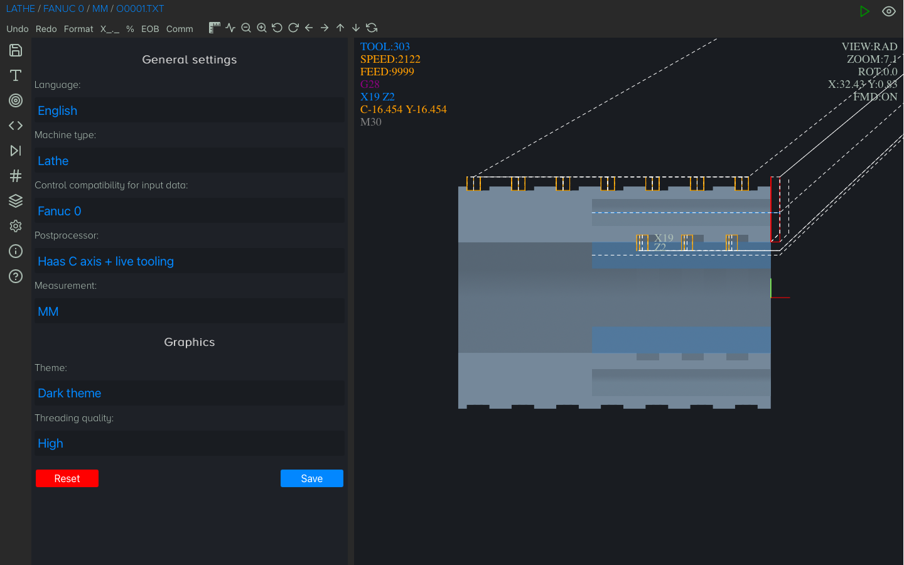
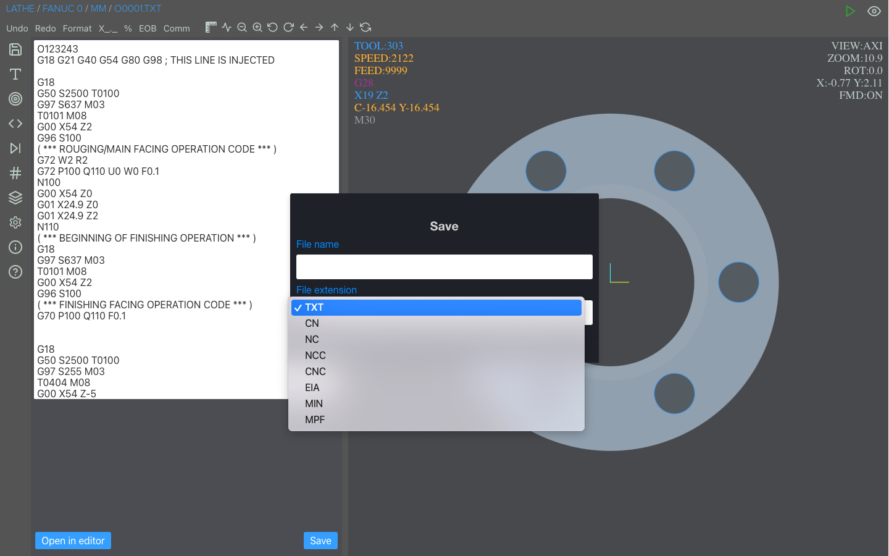
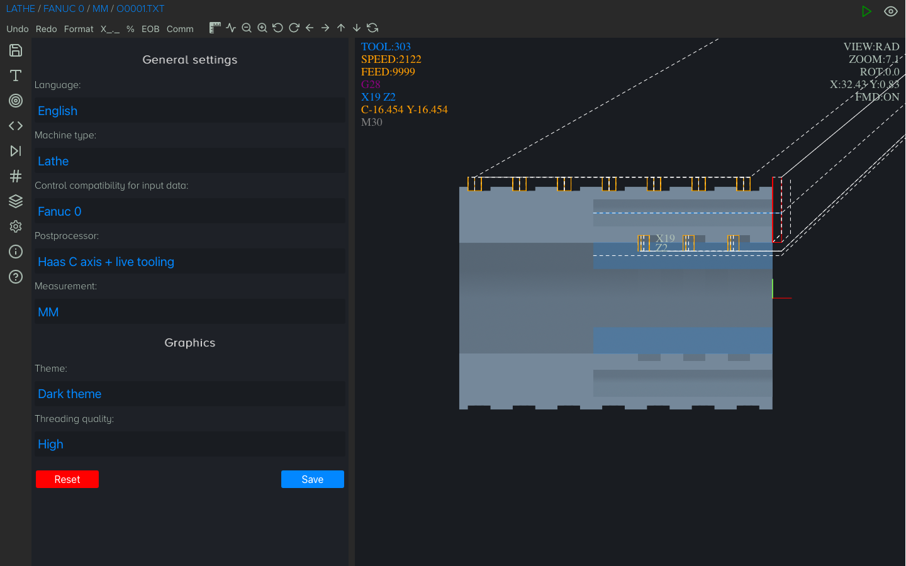
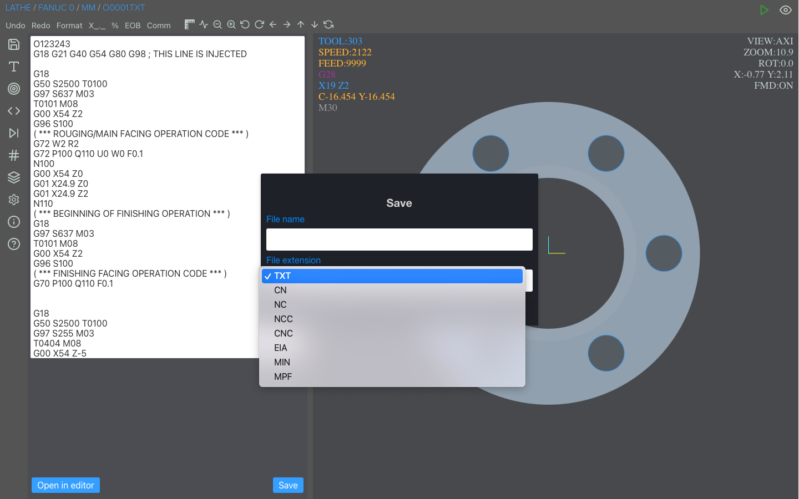

Lathe conversational programming (C axis + live tooling)

 





Looking for a way to simplify the program creation of your CNC lathe machine without having to spend
countless
hours mastering complex CAD/CAM software or manual coding?
Look no further than CNC Macro Simulator II TC - a conversational turning software.
Our innovative software allows users to program lathes in a conversational way, using simple instructions
and
an intuitive user interface.
This eliminates the need for complex programming skills and makes it accessible to operators and programmers
of all skill levels.
With 11 built-in typical turning operations, our software covers all common tasks, including FACING,
TURNING,
CONTOURING, DRILLING, THREADING, TAPPING, REAMING, BORING, GROOVING, FACE GROOVING, and PARTING.
Thanks to the ability to work with many postprocessors available for systems such as Fanuc, Haas, Okuma,
Sinumerik, Mitsubishi or others, our software is extremely versatile, allowing the use of one program for
many
types of machines.
So if you're looking for a better way to program your lathe machine, try CNC Macro Simulator II TC - the
ideal
solution for modern machine shops looking to stay competitive in today's fast-paced manufacturing
environment.
But that's not all! If you need to write a program by hand in ISO (Fanuc/Haas) CNC Macro Simulator II TC
will
let you do it, and with the benefit of macros (Fanuc Custom Macro B or its variation - Centroid).
And what if your machine does not support macros? Maybe your employees don't understand them? No problem!
CNC
Macro
Simulator II TC has a built-in algorithm that will convert a macro program to pure g code which will allow
them
to run on virtually any lathe that supports ISO.
- 23 useful operations in most cases that can be quickly called up using the search bar
- it is available for (Windows, MacOS, Linux, IOS and Android)
- very simple creation of subprograms (contours) with absolute, incremental and polar values as well as the use of chamfers and roundings
- tool approach point is automatically calculated based on whether it is OD, ID or FACE operation and safety allowance
- for the GROOVING, FACE GROOVING and PARTING operations, the start of the operation is automatically calculated taking into account the thickness of the selected tool
- for OD or FACE operations, if they start deeper than Z0, an intermediate approach point is calculated
- due to the fact that the data contained in the operation are remembered and can be used in the next one (of the same type e.g. GROOVING 1=> GROOVING 2, DRIILING 1=> DRILLING 2 and so on) and that most of the data is relative instead of absolute, it can be reused, e.g. only by changing location of the next groove or thread start point
- in each operation, the data starts the same, making it less likely to make a mistake
- virtually any operation can use a finishing operation
- automatic generation of a subroutine (contour) for the FACING operation based on the workpiece data provided by the user
- operations are assigned a color to better distinguish their order
- to change the order of the operation, just drag and drop it to where you want it
- program once created using the conversational shell can be used for one and two line ISO (Fanuc/Haas) formats and other controls by exporting using the appropriate postprocessor (additional fee)
- modern intuitive and dark UI
- when using ISO based control (Fanuc/Haas/Centroid) macros can be used (Fanuc Custom Macro B)
- the ability to use mathematical formulas as input
- FACING - removing material from the end of a workpiece to create a flat surface perpendicular to the axis of rotation
- TURNING - removing material from the inside od outside of a workpiece to create a desired shape or size
- CONTOURING - create specific shape, tool follows a path with a predefined geometry
- DRILLING - making a hole in a workpiece using a drill bit
- THREADING - cutting threads on the inside or outside of a workpiece
- TAPPING - cutting threads into a pre-drilled hole in a workpiece
- REAMING - enlarging a pre-existing hole in a workpiece to a specific size and shape using a reamer tool
- BORING - enlarging an existing hole in a workpiece to a specific size and shape using a boring tool
- GROOVING - cutting a groove into the surface of a workpiece
- FACE GROOVING - cutting a groove into the end face of a workpiece
- PARTING - cutting a workpiece to create two separate pieces
Viewport (simulator/graphics) information:
- measuring an object / coordinates
- simulation (play, play fast, stop, next, reset, previous, rewind)
- lathe - radial and axial view
- zoom
- shift image
- show/hide rapid movement
- simplified representation of tools (max 32 tools)
- metric/imperial mode
- 3 themes (dark, bright, black & white)
Lathe cycles support (TC and PRO version only):
- G70 finishing cycle
- G71 rough machining cycle
- G72 facing cycle
- G73 pattern repetition cycle
- G74 face grooving cycle
- G75 grooving cycle
- G76/G78 threading cycle
- G90 turning cycle
- G92 threading cycle
- G94 facing cycle
- G32/G33 thread cutting (straight and tapered)
- G28, G30 and G53 (home position)
G-code/Fanuc/Haas/Mazak ISO support:
- absolute, incremental and polar mode
- M98 subprogram (multiple formats)
- circular interpolation supported by using (I, J, K or R)
Macro (Fanuc Custom Macro B/Haas/Centroid) support:
- improved and faster macro interpreter (XME 1.4.0) for advanced macro programs
- keywords: IF, THEN, GOTO, WHILE, DO, END, ELSE
- special instruction - EXIT (to immediately end the program when this instruction is called)
- comparison operators (FANUC/HAAS): EQ, LT, LE, GT, GE, NE
- comparison operators (CENTROID):
== or EQ, < OR LT, <= or LE, > or GT, >= or GE, != or NE - G65/G66 macro subprogram call
- math functions supported: sin, cos, tan, asin, acos, atan, sqrt, abs, round, fix, fup, ln, exp, pow
- local, common variables and some of the most popular system variables
- support for both syntax FANUC/HAAS and CENTROID
Debugger:
- assigned and created variables
- called subroutine and nesting level
- math and logical calculations in line
- for IF and WHILE statement shows the actual value (true or false)
Code editor:
- code highlighting
- formatting
- commenting and uncommenting a piece of code
- code indentation
- undo/redo
- adding/removing EOB
- adding/removing %
- adding decimal point
Files:
- new project
- open file (opening multiple files at once)
- append (to add a subroutine locally)
- save
- save as
- export (to export macro program as a pure g code program)
- file extension supported:nc, cn, ncc, cnc, eia, txt, min, mpf
Input compatibility:
Fanuc 0, Fanuc 6, Fanuc 10, Fanuc 11, Fanuc 12, Fanuc 15, Fanuc 16, Fanuc 18, Fanuc 20, Fanuc 21,
Fanuc 30i,
Fanuc 31i, Fanuc 32i, Fanuc 35i, Haas, Centroid, Mazak ISO, Siemens 802D and others using CNC macros based on
Fanuc
Custom Macro B.
Output compatibility:
Same as input control selected, it also can be converted to Heidenhain, Sinumerik or other control upon
special request.
Languages:
English
Viewport (simulator/graphics) information:
- simulation (play, stop, next, reset)
- zoom
- 5 view modes (3D, XY, XY removal, XZ, YZ)
- shift image
- show/hide rapid motion
- simplified representation of tools (max 24 tools)
- metric/imperial mode
G-code/Fanuc/Haas/Mazak ISO support:
- absolute, incremental and polar mode
- G28, G30 and G53(home position)
- G70 finishing cycle
- G71 rough machining cycle
- G72 facing cycle
- G73 pattern repetition cycle
- G74 face grooving cycle
- G75 grooving cycle
- G76/G78 threading cycle
- G90 turning cycle
- G92 threading cycle
- G94 facing cycle
- G32/G33 thread cutting (straight and tapered)
- M98 subprogram (multiple formats)
- circular interpolation supported by using (I, K or R)
Macro (Fanuc Custom Macro B/Haas) support:
- keywords: IF, THEN, GOTO, WHILE, DO, END
- math functions supported: sin, cos, tan, asin, acos, atan, sqrt, abs, round, fix, fup, ln, exp, pow
- local, common variables and some of the most popular system variables
Debugger:
- assigned and created variables
- math and logical calculations in line
- for IF and WHILE statement shows the actual value (true or false)
Code editor:
- formatting
- undo
- adding/removing %
Files:
- new project
- open
- append(to add a subroutine locally)
- save
- save as
- file extension supported:nc, cn, ncc, cnc, eia, txt
Compatibility:
Fanuc 0, Fanuc 6, Fanuc 10, Fanuc 11, Fanuc 12, Fanuc 15, Fanuc 16, Fanuc 18, Fanuc 20, Fanuc 21, Fanuc 30i,
Fanuc 31i, Fanuc 32i, Fanuc 35i, Haas(one line format), Haas(two line format), Mazak ISO and others using
CNC
macros based on Fanuc Custom Macro B.
Languages:
English, Français, Deutsche, Italiano, Español, Suomi, Nederlandse, Svenska, Norsk, 한국어,日本語, Dansk, Polski,
Magyar, Pусский, Português, 中文, Türkçe, Melayu, हिन्दी, اَلْعَرَبِيَّةُ, Română, Lietuvių, Latviešu, Eesti
keel, Slovenský, Český, Ελληνικά, Tiếng Việt